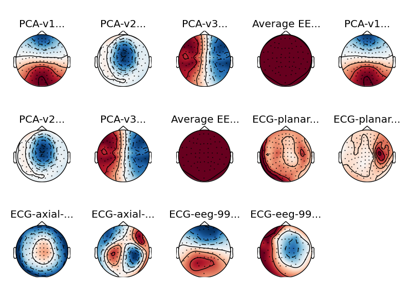

Plot SSP projections topographies¶
This example shows how to display topographies of SSP projection vectors. The projections used are the ones correcting for ECG artifacts.
Script output:
Reading /data1/agramfort/work/src/mne-python/examples/MNE-sample-data/MEG/sample/sample_audvis-ave.fif ...
Read a total of 4 projection items:
PCA-v1 (1 x 102) active
PCA-v2 (1 x 102) active
PCA-v3 (1 x 102) active
Average EEG reference (1 x 60) active
Found the data of interest:
t = -199.80 ... 499.49 ms (Left Auditory)
0 CTF compensation matrices available
nave = 55 - aspect type = 100
Projections have already been applied. Setting proj attribute to True.
No baseline correction applied...
Read a total of 10 projection items:
PCA-v1 (1 x 102) idle
PCA-v2 (1 x 102) idle
PCA-v3 (1 x 102) idle
Average EEG reference (1 x 59) idle
ECG-planar-999--0.200-0.400-PCA-01 (1 x 203) idle
ECG-planar-999--0.200-0.400-PCA-02 (1 x 203) idle
ECG-axial-999--0.200-0.400-PCA-01 (1 x 102) idle
...
Python source code: plot_ssp_projs_topomaps.py
# Author: Alexandre Gramfort <alexandre.gramfort@telecom-paristech.fr>
# Denis A. Engemann <denis.engemann@gmail.com>
# Teon Brooks <teon.brooks@gmail.com>
# License: BSD (3-clause)
from mne import read_proj, read_evokeds
from mne.datasets import sample
print(__doc__)
data_path = sample.data_path()
ecg_fname = data_path + '/MEG/sample/sample_audvis_ecg_proj.fif'
ave_fname = data_path + '/MEG/sample/sample_audvis-ave.fif'
evoked = read_evokeds(ave_fname, condition='Left Auditory')
projs = read_proj(ecg_fname)
evoked.add_proj(projs)
evoked.plot_projs_topomap()
Total running time of the example: 9 seconds